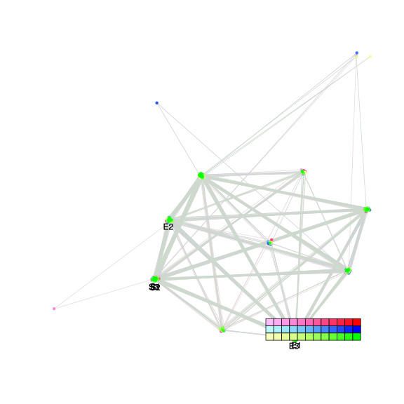
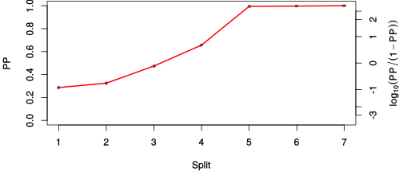
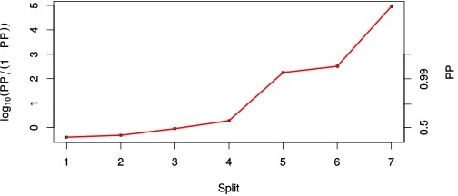

| chain # | burnin | subsample | Iterations (remaining) | command line | subdirectory | directory |
|---|---|---|---|---|---|---|
| 1 | 10000 | 1 | 90000 | /usr/local/bali-phy-3.0-beta2/bin/bali-phy E7_AA_red3_Alpha_all4Manatees.fas -s 46132 -n E7_red3_Alpha_all4Manatees_c1 | E7_red3_Alpha_all4Manatees_c1-1 | /home/willemse/data/trees/BaliPhy/E7 |
| 2 | 10000 | 1 | 90000 | /usr/local/bali-phy-3.0-beta2/bin/bali-phy E7_AA_red3_Alpha_all4Manatees.fas -s 24932 -n E7_red3_Alpha_all4Manatees_c2 | E7_red3_Alpha_all4Manatees_c2-1 | /home/willemse/data/trees/BaliPhy/E7 |
| 3 | 10000 | 1 | 90000 | /usr/local/bali-phy-3.0-beta2/bin/bali-phy E7_AA_red3_Alpha_all4Manatees.fas -s 80245 -n E7_red3_Alpha_all4Manatees_c3 | E7_red3_Alpha_all4Manatees_c3-1 | /home/willemse/data/trees/BaliPhy/E7 |
| P(data|M) = -1844.401 +- 0.138 | Complete sample: 44 topologies | 95% Bayesian credible interval: 8 topologies |
Phylogeny Distribution

| Partition support: Summary |
| Partition support graph: SVG |
{kind=link}
| 50% consensus | Newick (+PP) | SVG | |||||
| 66% consensus | Newick (+PP) | SVG | |||||
| 80% consensus | Newick (+PP) | SVG | |||||
| 90% consensus | Newick (+PP) | SVG | |||||
| 95% consensus | Newick (+PP) | SVG | |||||
| 99% consensus | Newick (+PP) | SVG | |||||
| 100% consensus | Newick (+PP) | SVG | |||||
| MAP | Newick (+PP) | SVG | |||||
| greedy | Newick (+PP) | SVG |
{kind=link}
{kind=link}
{kind=link}
{kind=link}
{kind=link}
{kind=link}
{kind=link}
{kind=link}
Alignment Distribution
Partition 1
| Diff | Min. %identity | # Sites | Constant | Informative | ||||
|---|---|---|---|---|---|---|---|---|
| Initial | FASTA | HTML | Diff | 7.76% | 117 | 4 (3.42%) | 59 (50.4%) | |
| Best (WPD) | FASTA | HTML | AU | 19.1% | 184 | 11 (5.98%) | 64 (34.8%) |
Mixing
{kind=link}
{kind=link}
| burnin (scalar) | ESS (scalar) | ESS (partition) | ASDSF | MSDSF | PSRF-CI80% | PSRF-RCF |
|---|---|---|---|---|---|---|
| 986 | 3081 | 5013.991 | 0.002 | 0.003 | 1 | 1.004 |
Projection of RF distances for the first 3 chains3D | Variation of split PPs across chains |
Scalar variables
| Statistic | Median | 95% BCI | ACT | ESS | burnin | PSRF-CI80% | PSRF-RCF |
|---|---|---|---|---|---|---|---|
| prior | -194.6 | (-236.4, -159.5) | 36.55 | 7386 | 613 | 1 | 0.9984 |
| prior_A1 | -181.2 | (-220.6, -148.4) | 27.64 | 9769 | 612 | 0.9998 | 1 |
| likelihood | -1827 | (-1846, -1807) | 9.301 | 29028 | 117 | 1 | 1 |
| logp | -2021 | (-2056, -1991) | 39.19 | 6889 | 556 | 1 | 0.9983 |
| Heat.beta | 1 | ||||||
| Scale1 | 4.13 | (2.015, 7.325) | 1.025 | 263478 | 126 | 1 | 0.9979 |
| S1.F.pi.A | 0.05301 | (0.03583, 0.072) | 8.068 | 33464 | 464 | 1 | 0.9991 |
| S1.F.pi.R | 0.05484 | (0.0354, 0.07585) | 8.148 | 33137 | 343 | 1 | 1.002 |
| S1.F.pi.N | 0.03214 | (0.01951, 0.04667) | 7.854 | 34378 | 452 | 1 | 1 |
| S1.F.pi.D | 0.07208 | (0.05039, 0.09543) | 8.407 | 32118 | 391 | 0.9998 | 0.999 |
| S1.F.pi.C | 0.05817 | (0.03618, 0.08318) | 8.117 | 33265 | 531 | 0.9999 | 1.004 |
| S1.F.pi.Q | 0.05404 | (0.03713, 0.07286) | 8.137 | 33180 | 263 | 1 | 0.9937 |
| S1.F.pi.E | 0.09232 | (0.06903, 0.1169) | 8.777 | 30761 | 348 | 0.9996 | 0.9924 |
| S1.F.pi.G | 0.0599 | (0.03758, 0.08479) | 7.918 | 34101 | 194 | 0.9996 | 1 |
| S1.F.pi.H | 0.04098 | (0.02506, 0.05923) | 7.869 | 34313 | 326 | 1 | 0.9997 |
| S1.F.pi.I | 0.03919 | (0.02523, 0.05544) | 8.08 | 33415 | 193 | 0.9997 | 1.001 |
| S1.F.pi.L | 0.09379 | (0.06792, 0.1223) | 8.002 | 33740 | 227 | 0.9994 | 0.9946 |
| S1.F.pi.K | 0.02422 | (0.01274, 0.03759) | 8.002 | 33742 | 400 | 0.9999 | 1.004 |
| S1.F.pi.M | 0.008136 | (0.002578, 0.0157) | 8.584 | 31454 | 410 | 0.9999 | 1.001 |
| S1.F.pi.F | 0.03319 | (0.0184, 0.05065) | 7.935 | 34026 | 552 | 1 | 0.9996 |
| S1.F.pi.P | 0.04959 | (0.02998, 0.07145) | 8.139 | 33175 | 241 | 0.9999 | 1.001 |
| S1.F.pi.S | 0.0483 | (0.03174, 0.06688) | 8.097 | 33345 | 388 | 1 | 0.9928 |
| S1.F.pi.T | 0.06223 | (0.04307, 0.0838) | 7.785 | 34682 | 461 | 1 | 1.001 |
| S1.F.pi.W | 0.006811 | (0.0009316, 0.0164) | 9.022 | 29926 | 400 | 0.9998 | 0.9972 |
| S1.F.pi.Y | 0.03876 | (0.02218, 0.05865) | 8.122 | 33244 | 446 | 1 | 0.9991 |
| S1.F.pi.V | 0.06664 | (0.04653, 0.088) | 8.265 | 32666 | 530 | 1 | 0.9985 |
| I1.RS07.meanIndelLengthMinus1 | 3.352 | (1.67, 5.779) | 9.718 | 27785 | 320 | 1 | 1.002 |
| I1.RS07.logLambda | -3.779 | (-4.252, -3.264) | 8.514 | 31713 | 100 | 1 | 1 |
| |A1| | 172 | (156, 189) | 87.64 | 3080 | 986 | 0.9706 | 1.003 |
| #indels1 | 24 | (19, 30) | 22.27 | 12122 | 499 | 0.875 | 0.9982 |
| |indels1| | 95 | (72, 123) | 53.71 | 5027 | 722 | 0.9706 | 1.002 |
| #substs1 | 318 | (302, 330) | 79.44 | 3398 | 985 | 0.9444 | 1 |
| Scale1*|T| | 5.005 | (4.33, 5.718) | 4.88 | 55330 | 328 | 1 | 0.9991 |
| |A| | 172 | (156, 189) | 87.64 | 3080 | 986 | 0.9706 | 1.003 |
| #indels | 24 | (19, 30) | 22.27 | 12122 | 499 | 0.875 | 0.9982 |
| |indels| | 95 | (72, 123) | 53.71 | 5027 | 722 | 0.9706 | 1.002 |
| #substs | 318 | (302, 330) | 79.44 | 3398 | 985 | 0.9444 | 1 |
| |T| | 1.213 | (0.5569, 2.039) | 1 | 270003 | 109 | 0.9999 | 0.9982 |